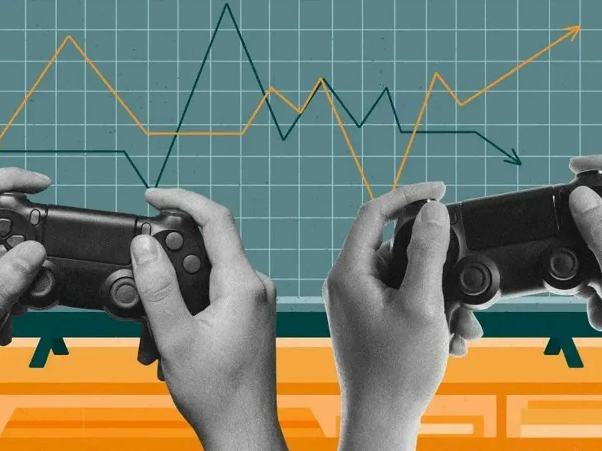

O mercado gamer no Brasil tem se destacado como um dos mais promissores e em crescimento constante na América Latina. Impulsionado pela popularização dos jogos digitais, pelo aumento do acesso à internet e pela disseminação de dispositivos móveis, o setor movimenta bilhões de reais por ano. O país ocupa uma posição de destaque global, sendo um dos maiores consumidores de games do mundo. O público é diverso, abrangendo todas as faixas etárias e gêneros, e a comunidade de jogadores é altamente engajada, o que atrai investimentos de grandes empresas e marcas internacionais.
Além do consumo de jogos, o Brasil também tem se consolidado como um polo de desenvolvimento de games independentes. Estúdios nacionais vêm ganhando reconhecimento internacional com produções criativas e inovadoras. O cenário de eSports também tem crescido significativamente, com atletas profissionais, ligas estruturadas e transmissões ao vivo que atraem milhões de espectadores. Apesar dos desafios, como a alta carga tributária sobre produtos eletrônicos, o mercado gamer brasileiro continua em expansão, com grandes expectativas para os próximos anos.